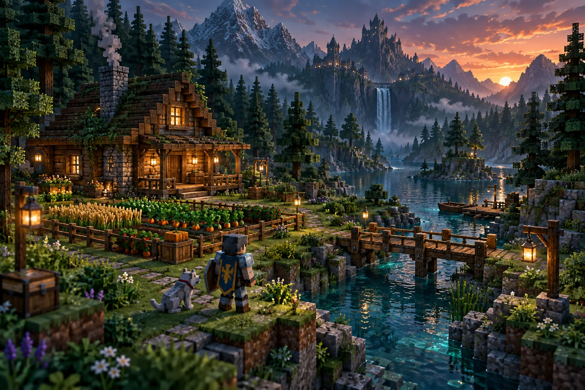
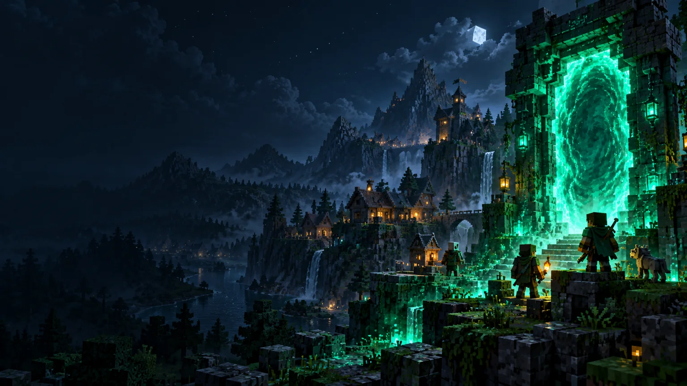
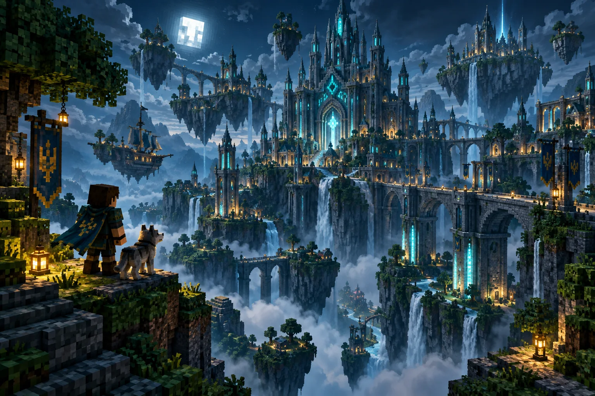
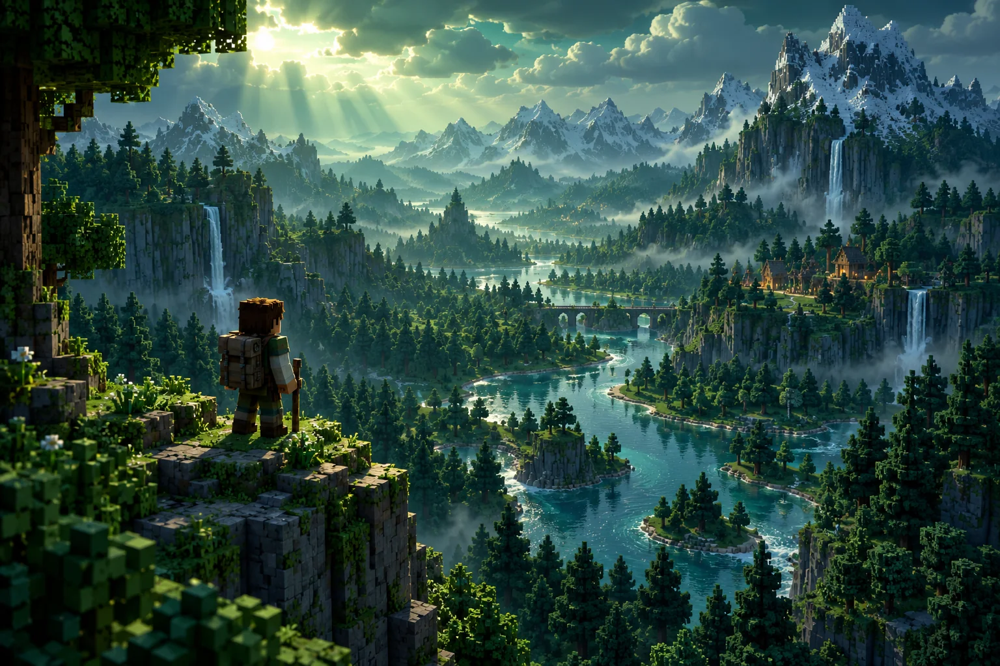
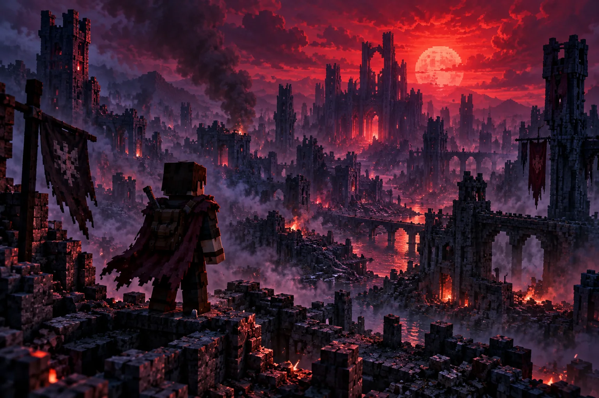
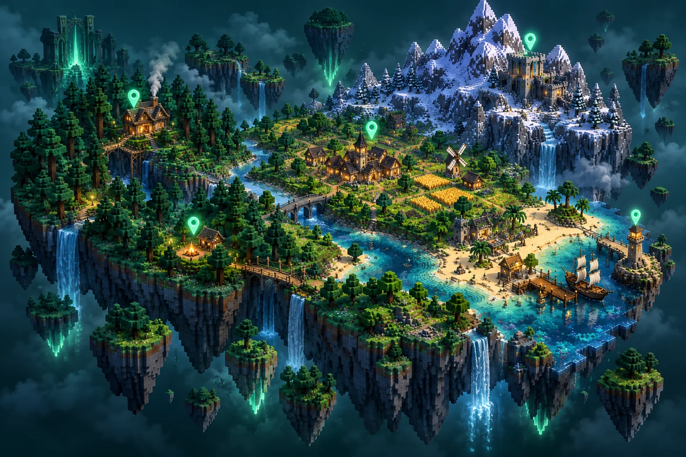
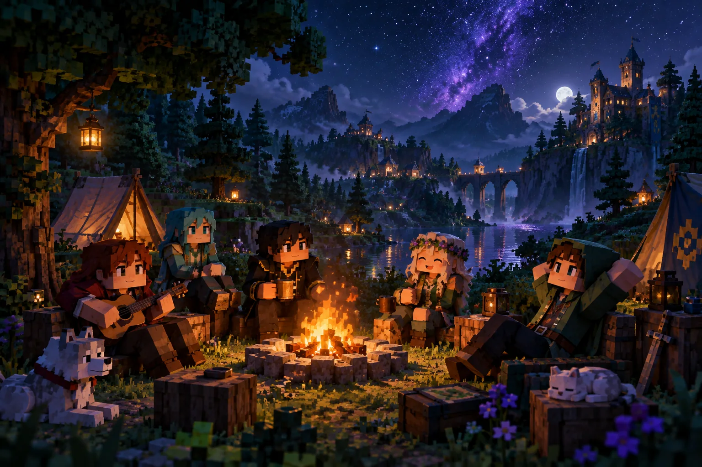
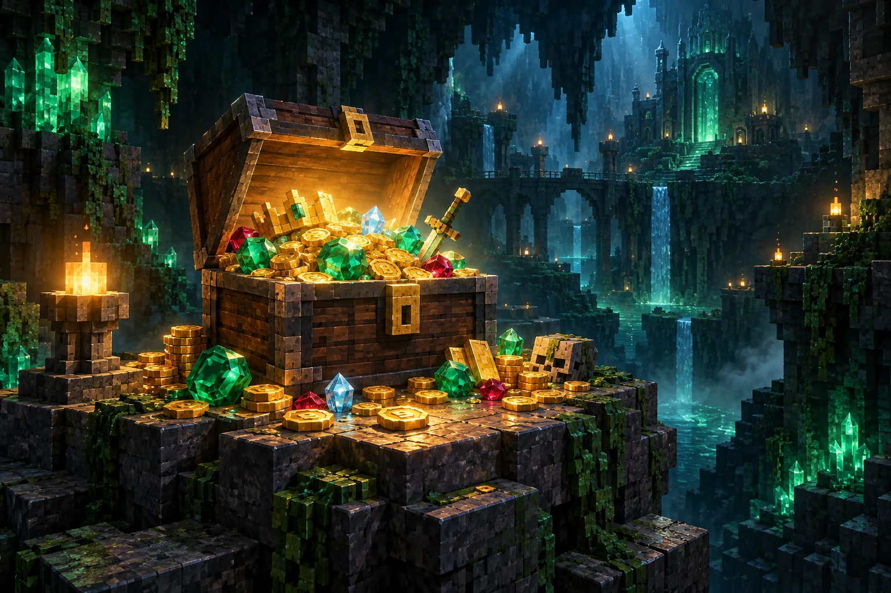

01 / SURVIVALЗнайоме виживання з можливостями для спільної гри: привати, економіка, клани та магазини.

УКРАЇНСЬКИЙ MINECRAFT-СЕРВЕР
Від першого блоку до великих пригод.
Знаходь своїх. Будуй своє.
play.minecrafter.in.ua01 / ОБЕРИ СВІЙ ШЛЯХ
Затишне виживання, масштабні будівлі чи повна невідомість — з чого почнеш ти?

01 / SURVIVALЗнайоме виживання з можливостями для спільної гри: привати, економіка, клани та магазини.

02 / CREATIVEОкремий світ для будівництва на власних ділянках. Зосередься на своїй наступній великій ідеї.

03 / WHITELISTСвіт для спільної гри з доступом за заявкою. Для тих, кому важливі атмосфера та сусіди.

04 / ANARCHYНебезпечне виживання, непередбачувані зустрічі та свобода дій. Заходь, якщо готовий до ризику.
02 / МІСЦЕ ДЛЯ СВОЇХ
Спільна адреса для Java на ПК та Bedrock на телефоні або планшеті.
Знайомся, знаходь команду й берись за проєкт, який давно хотів створити.
Правила, інструкції та зв’язок із командою завжди під рукою.

03 / СВІТ БЕЗ КРАЮ
Переглядай біоми, знаходь координати та плануй подорожі на карті ВаніллаПлюс.
Ілюстрація світу. Актуальна карта відкриється в новій вкладці.

04 / НАШІ ЛЮДИ
Знайди напарника, обговори свою будівлю, прочитай оголошення або звернися по допомогу.
05 / ПЕРШИЙ КРОК
Усе потрібне для першого входу — в одній інструкції.
Java на ПК або Bedrock на мобільному.
play.minecrafter.in.ua
Пройди реєстрацію за підказкою в чаті.

06 / ПІДТРИМКА ПРОЄКТУ
Добровільна підтримка допомагає утримувати сервер. Умови й доступні можливості — на офіційній сторінці.
07 / КОРОТКО ПРО ГОЛОВНЕ
Так, сервер підтримує Bedrock Edition. Адреса така сама, як на ПК; порт для Bedrock — 19132.
Інструкція для Bedrockplay.minecrafter.in.ua. У Java порт 25565 зазвичай можна не вказувати.
Як підключитисяНа різних офіційних сторінках діапазони версій відрізняються. Поточну версію для твого режиму уточни в Discord.
Запитати у спільнотиПриєднайся до Discord і заповни форму в каналі «вайтлист-вхід». Доступ надають після розгляду заявки.
Про режимПОБАЧИМОСЬ У ГРІ
play.minecrafter.in.ua